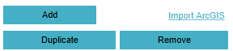
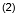
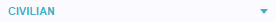
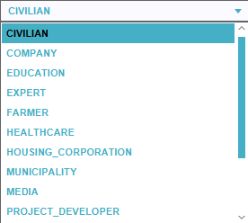
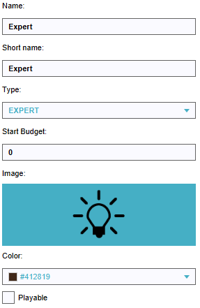
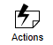
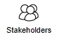
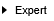
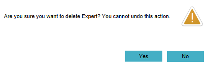
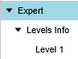

import logging;reload(logging) FORMAT="%(asctime)-8s %(message)s" logging.basicConfig(format=FORMAT, filename="test.log", level=logging.DEBUG) logging.info("[info] Remove and add a non-playable stakeholder...") find() click(Pattern().targetOffset(-83,-15)) if not exists(,5): print("[error] Adding stakeholder failed!") logging.error("[error] Adding stakeholder failed!") exit(1) else: print("[success] Adding stakeholder successful!") logging.info("[success] Adding stakeholder successful!") click() click() click(Pattern().targetOffset(-110,-23)) if not exists(,5): print("[error] Changing default stakeholder failed!") logging.error("[error] Changing default stakeholder failed!") exit(1) else: print("[success] Changing default stakeholder successful!") logging.info("[success] Changing default stakeholder successful!") click() click() click() click() wait(,5) click(Pattern().targetOffset(79,49)) waitVanish(,10) if exists(): print("[error] Stakeholder (non playable) not removed!") logging.error("[error] Stakeholder (non playable) not removed!") exit(1) else: print("[success] Stakeholder (non playable) removed!") logging.info("[success] Stakeholder (non playable) removed!")